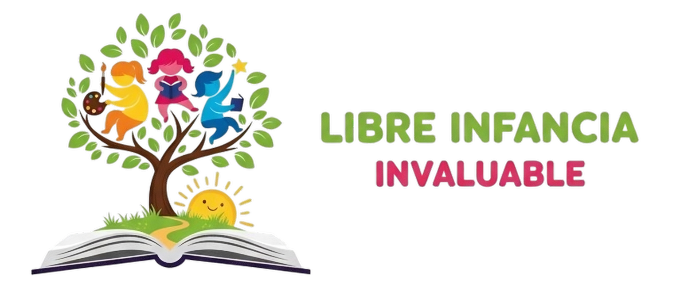

Un quiz local para explorar cómo aprendes mejor.
Responde 5 preguntas rápidas y mira si te acomoda más aprender en proyectos, con apoyo visual, en movimiento, de forma autónoma o junto a otras personas.
Elige la alternativa que más se parece a tu forma natural de estudiar. No hay respuestas buenas o malas.
Completa el cuestionario para descubrir el enfoque de estudio que mejor se alinea contigo y para volver luego a la portada si quieres comparar con la metodología de la escuela.
Cuando envíes el quiz, aquí verás una recomendación breve para estudiar mejor según tu perfil dominante.